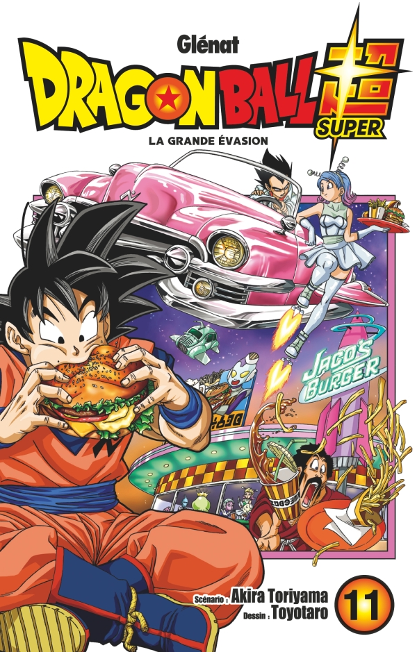

Le combat contre le terrible criminel Moro fait toujours rage, et le Dai Kaio Shin endormi au fond de Boo s’est même joint à la danse. Le lieu de l’action quitte le vide sidéral pour se déplacer sur la nouvelle planète Namek. Mais Moro, grâce à son troisième vœu, a pris le dessus sur Goku et Vegeta. Voilà maintenant qu’il a disparu sans laisser de trace !! Goku et ses amis ont-ils une chance d’en venir à bout ?!
Ch. 49 : Le combat spatial
Ch. 50 : La grande évasion
Ch. 51 : Chacun de son côté
Ch. 52 : Les entraînements de Goku et Vegeta